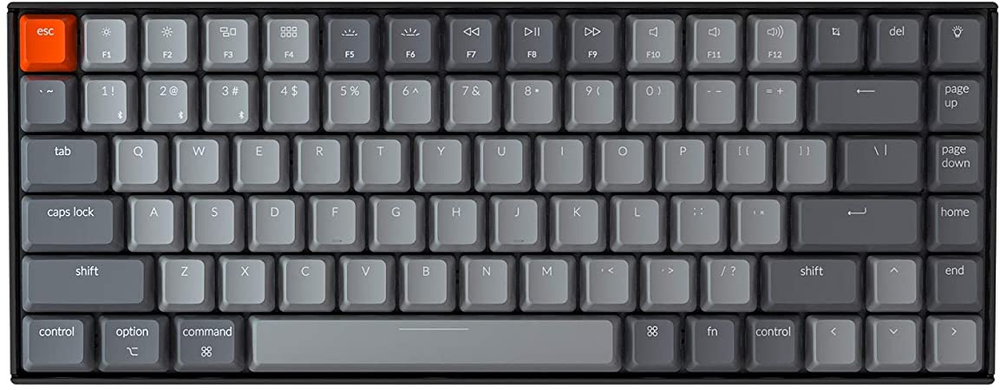

Lojinha de Teclados do Douglas
Nesta loja disponibilizo os melhores produtos de informática do mundo. Nela você pode comprar o que quiser pelo melhor preço e qualidade.
Veja a nossa lista de teclados disponíveis:
- Keycron K2
- OLKB Plank
- Ergo Dox
Keycron K2
Um teclado bluetooth com ótimo alcance, que usa as switch Cherry Red excelentes para games. Possui iluminação RGB com mais de 10 efeitos diferentes.

OLKB Plank
Com apenas 44 teclas esse teclado ortolinear vai melhorar sua ergonomia ao trabalhar com código. Suas mão nao precisam fazer um caminho muito longo entre uma tecla e outra. E o melhor, possui firmware QMK o que permite você atualizar gravar quantas macros vc desejar.
 Ver mais detalhes e Preço do OLKB
Ver mais detalhes e Preço do OLKB
Ergo Dox
Falando em teclado ergonomico e que aceita macros, nao podemos deixar de apresentar o Ergo Dox. Um teclado revolucionario que te ensinará a digitar novamente.
 Ver mais detalhes e Preço Ergo Dox
Ver mais detalhes e Preço Ergo Dox
Teclados mais vendidos:
- OLKB Plank
- Ergo Dox
- Keycron K2